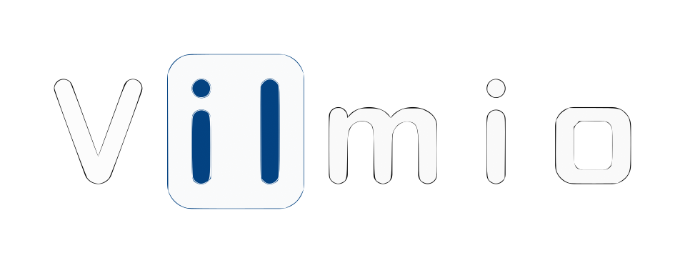

<header id="header" class="fixed-top header-scrolled">
  <div class="container d-flex align-items-center">
    <h1 class="logo me-auto">
      
    </h1>
    <div class="container-sm text-left">
      <div class="connection-status-container">
        <span>Connection status: </span>
        <span>{{dataService.connectionStatus}}</span>
      </div>
      <div class="select-container">
        <span>Port:</span>
        <select [(ngModel)]="dataService.selectedPort" (change)="onPortChange()">
          <option *ngFor="let port of dataService.availablePorts" [value]="port">{{port}}</option>
        </select>
      </div>
    </div>
    <h1 class="tracking-in-expand">Sensors API</h1>
  </div>
</header>
